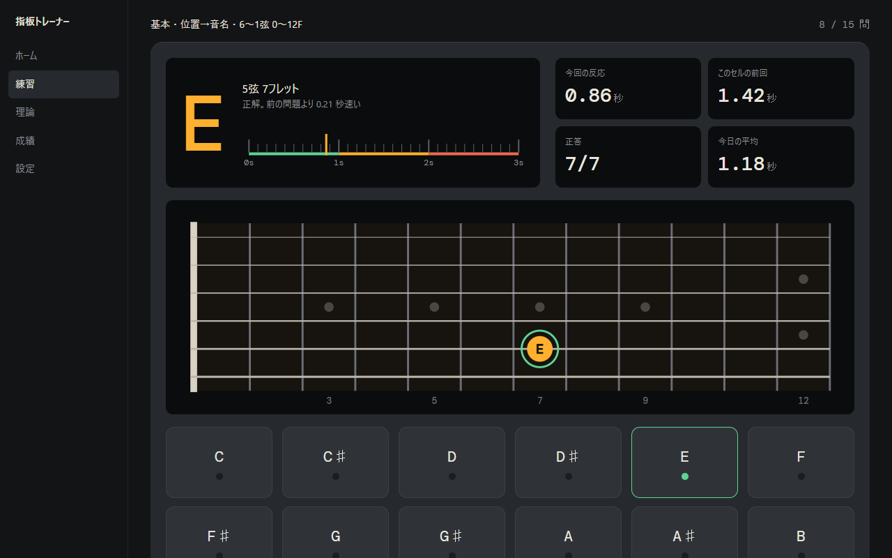
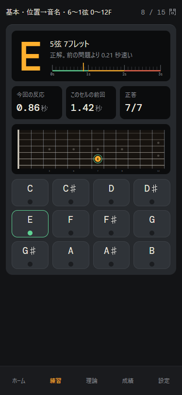
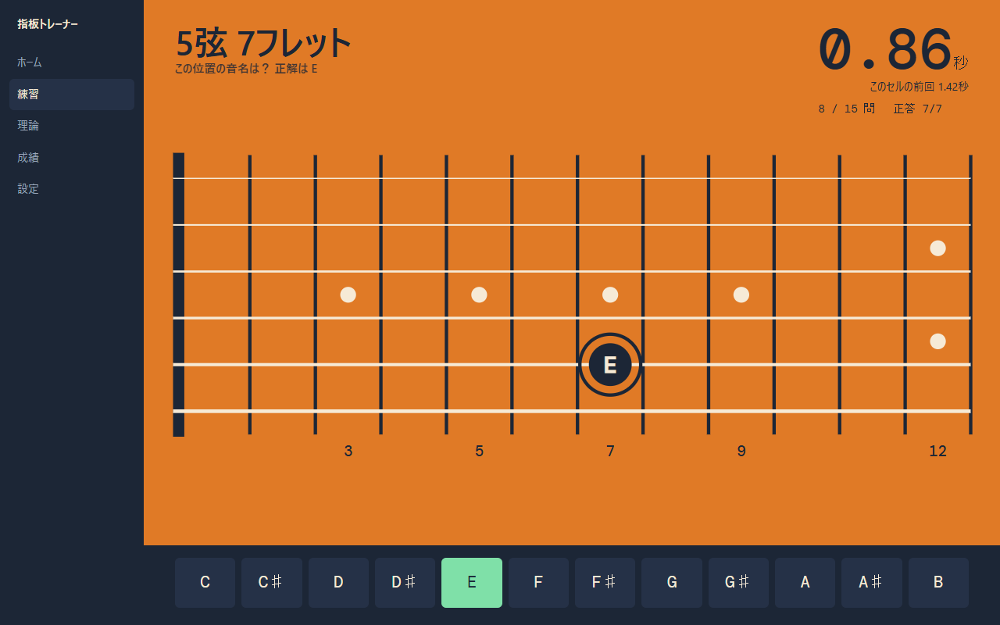
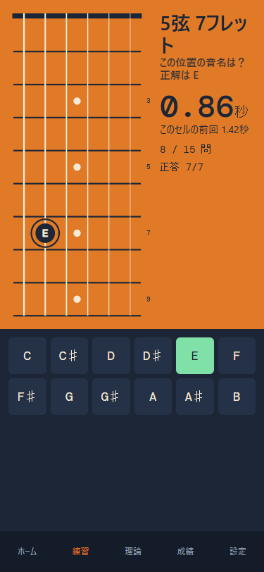
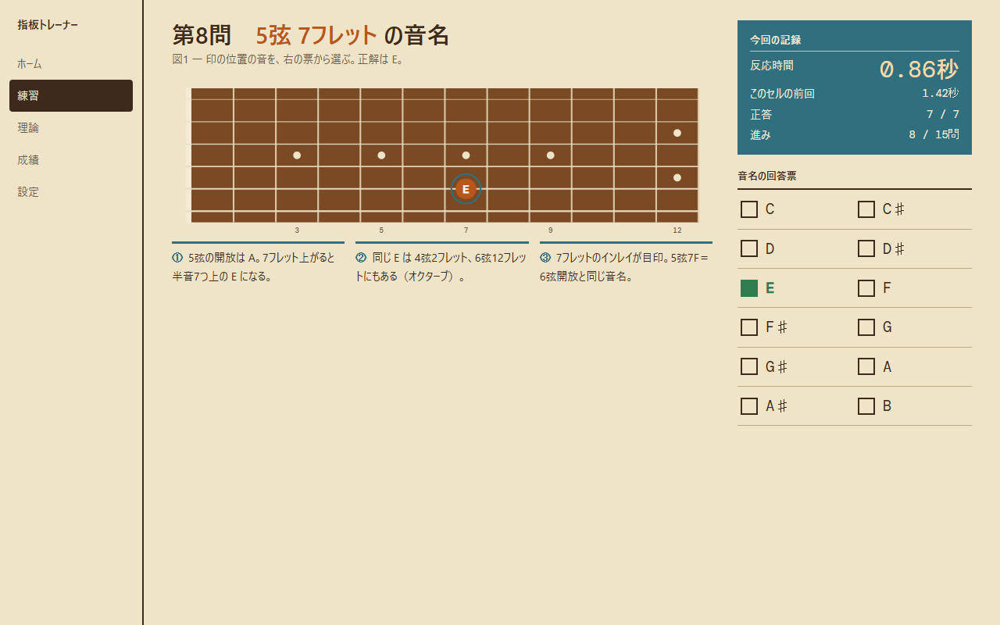
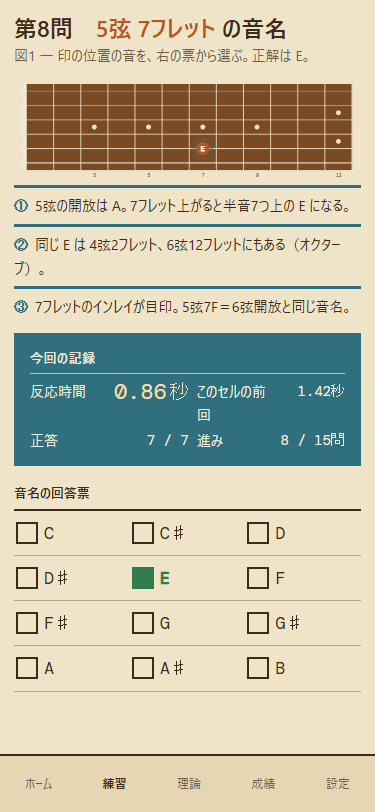

A 機材の操作盤推奨
出発点: チューナーとエフェクターの筐体（ピン 4・9・73・72）


- 主役
- チューナーのように巨大な音名と、反応時間のメーター（0〜3秒、1秒未満が「反射」の帯）
- 並び順
- 読み取り表示（音名・反応・前回比）→ 指板の表示窓 → 12音のフットスイッチ
- 合う理由
- ギターを抱えたまま目を落とす使い方に合う。暗い画面は夜の練習でまぶしくない。今のダーク・スタジオ系の判断（ADR-0003）を引き継げる
- 弱点
- 今の配色と近く、変化が「カードの格子→1台の筐体」という構成の差に留まる。機材のコスプレになりすぎない加減が要る
B 色面ポスター
出発点: 単色の面に弦だけを引いたギターのポスター（ピン 16・14・19・61）


- 主役
- 画面いっぱいの橙の面と、そこに引いた指板そのもの。スマホではネックを縦に置き、画面の高さを指板に使う
- 並び順
- 問題（5弦7フレット）と反応時間を面の上に大きく → 指板 → 紺の帯に12音
- 合う理由
- 一目で他のどのサイトとも違う。縦置きの指板はコード図と同じ向きで、スマホでフレットが大きく取れる
- 弱点
- 指板を縦にするには全クイズの指板描画を作り直す必要がある。橙の面は長時間だと疲れ、成績や理論ページへの展開が難しい
C 教則本・カタログ
出発点: 1950〜60年代のギターカタログと教則本の図版（ピン 28・34・35・53）


- 主役
- 木目の指板の図版と、番号付きの注記（なぜ E なのか、同じ E はどこにあるか）
- 並び順
- 問題の見出し → 図1（指板）→ 注記①〜③ → 右欄に記録表と「回答票」
- 合う理由
- 理論レッスンや「なぜ」を見せる画面と相性がよい。成績を仕様表の形で読ませられる
- 弱点
- 明るい紙面は夜の練習でまぶしい。読ませる構成なので、反射で答える練習の速さとは逆向き。生成りの紙など2番目の定番に寄りやすい